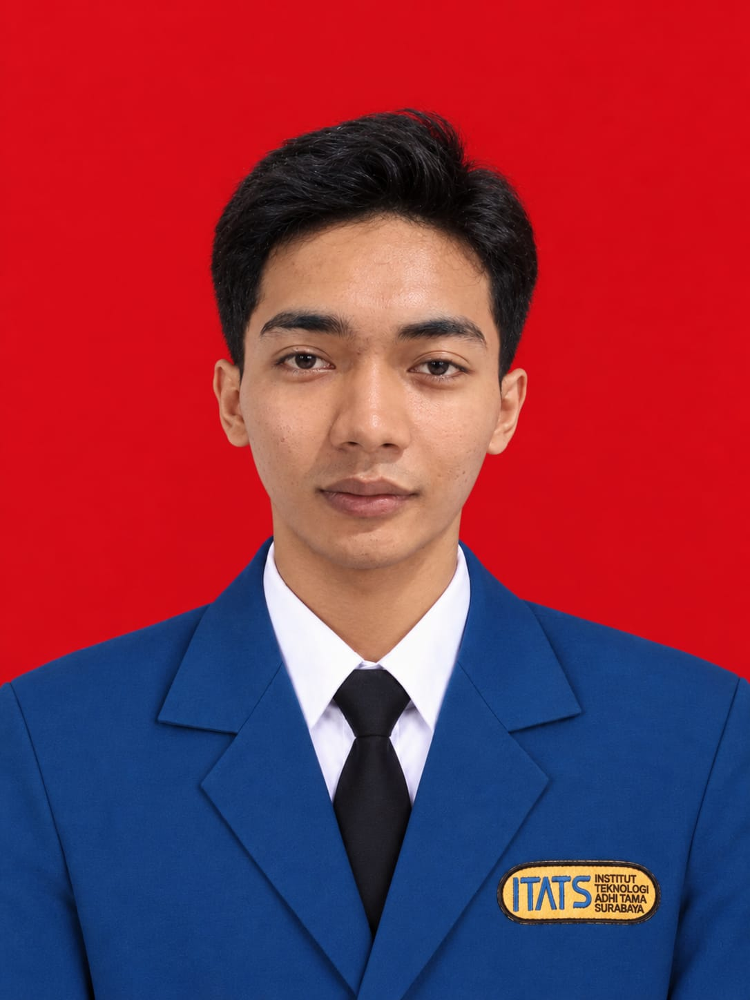

Perancangan Basis Data Relasional
Database • SQL • ERDAnalisis kebutuhan sistem informasi, pemodelan relasi entitas (Entity Relationship Diagram), normalisasi data tingkat 1NF hingga 3NF, serta perancangan skema relasional terstruktur.

Mahasiswa Sistem Informasi • Asisten Laboratorium • Sekretaris PAC
Institut Teknologi Adhi Tama Surabaya (ITATS) • Surabaya, Indonesia
Mahasiswa Sistem Informasi ITATS dengan latar belakang ganda dalam disiplin teknis dan kepemimpinan organisasi. Berpengalaman di bidang kendali mutu (Quality Control), pelayanan pelanggan berstandar internasional, serta manajemen operasional usaha. Aktif mengabdi sebagai Asisten Laboratorium Sistem Informasi ITATS (2026) dan memegang amanah kesekretariatan organisasi kepemudaan serta bela diri.
Institut Teknologi Adhi Tama Surabaya (ITATS)
Fokus pada analisis kebutuhan sistem informasi, pemodelan proses bisnis, rekayasa basis data, dan pengembangan perangkat lunak.
Laboratorium Sistem Informasi ITATS
Membimbing mahasiswa dalam sesi praktikum komputasi, evaluasi tugas praktikum, serta asistensi teknis pemeliharaan fasilitas laboratorium.
Analisis kebutuhan sistem informasi, pemodelan relasi entitas (Entity Relationship Diagram), normalisasi data tingkat 1NF hingga 3NF, serta perancangan skema relasional terstruktur.
Penyusunan 9 elemen kunci Business Model Canvas (Value Propositions, Customer Segments, Channels, Revenue Streams, Cost Structure) untuk pemetaan kelayakan usaha dan sistem operasional.
Penyusunan panduan materi praktikum mahasiswa, pengujian kelayakan modul aplikasi, serta pendampingan langsung penanganan kendala kode program dan database.
CV. Shafa Multimedia (Perusahaan Percetakan)
Tanggung Jawab: Menginspeksi standar mutu hasil produksi percetakan, memastikan ketepatan kalibrasi warna dan presisi pemotongan, serta melakukan verifikasi kelayakan barang jadi sebelum didistribusikan ke pemesan.
WAKi International Group
Tanggung Jawab: Memberikan pelayanan konsultasi pelanggan, menangani pertanyaan dan keluhan klien secara solutif, serta menjaga standar kepuasan pelanggan pada perusahaan multinasional.
Usaha Kedai Mandiri (Wirausaha)
Tanggung Jawab: Menerapkan konsep Business Model Canvas (BMC) dalam perencanaan usaha, mengelola pengadaan bahan baku, pembukuan kas transaksi harian, serta penetapan strategi pemasaran pelanggan.
Organisasi Kepemudaan Kota Surabaya (Terpilih Kembali)
Berpartisipasi aktif dalam perancangan dan pelaksanaan program pembinaan generasi muda, kegiatan sosial kemasyarakatan, serta jejaring pemuda di Surabaya.
Sekretaris PAC Masa Bakti 2025 – 2030
Telah bergabung aktif sejak 2018 dan kini dipercaya memimpin tata kelola administrasi organisasi, persuratan resmi, dan koordinasi internal Pimpinan Anak Cabang (PAC).
Himpunan Mahasiswa Sistem Informasi ITATS
Berpartisipasi dalam agenda keorganisasian kemahasiswaan jurusan Sistem Informasi, kepanitiaan seminar akademik, serta kegiatan internal program studi.
Mahasiswa Pecinta Alam dan Seni Indonesia
Terlibat dalam pembinaan ketahanan mental dan fisik di alam terbuka, pelestarian lingkungan hidup, serta kegiatan apresiasi seni dan kebudayaan.